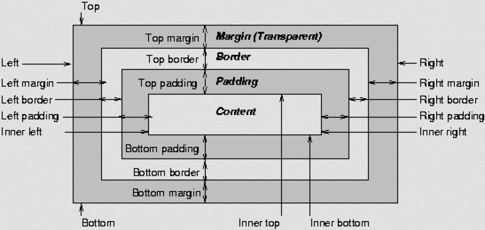

Points of this Blog
- What is the difference between Margin, Border, and Padding
- What are the differences between relative, absolute, and fixed positioning
- What does it mean to display inline vs inline blocks
The distinction between Margin and Padding is the Margin is the space outside the border, which means that it will affect how your element will enteract with the spacing of other elements on the page. Padding is the spacing of the content (inside the element) to the border. The border is simply the boundary of your element.The following image shows the Margin, Border, and Padding on an element:

Relative position is where the element can be moved from the position it would normally be, so doing this to an element with no position attribute means that the element will stay where it is. With the Relative positioning, you can move the element around with position attributes like "left". Absolute position allows you to place the element exactly where you want it, regardless of any other elements around it. While this is a powerful way to layout elements on a page, overusing this will lead to the page being hard to maintain since every element with the Absolute position will have to be repositioned individually. Fixed position is the position of the element relative to the browser window display (the viewport). An element with this attribute will stay in the same position as you scroll down the page since the viewport stays the same.
Display inline means that the two elements can sit side by side, but sometimes this leads to problem since inline does NOT respect the height or width of the next element. For example, the paragraph tag's default display value is block, means that if I have two paragraph elements on a page, they will automatically be on top of each other with defined height and width. If I were to set their display to "inline", then the two paragraphs will be next to each other. However, since inline does not respect height or width of the paragraphs will be integrated into a a blob of mess. In order to display two paragraphs next to each other but not integrate together, then the display value should be set to "inline-block". This alls the paragraphs to keep their block property, which means the two elements will remain distint and their height and width can be set.